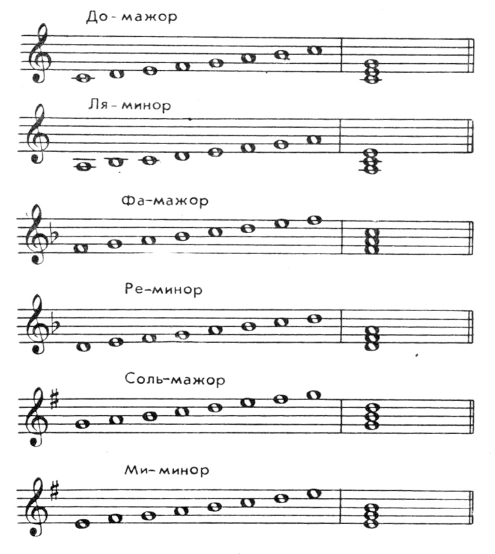

Урок 4. Гамма, тональность.
Теория
В музыке гамма — это последовательность звуков, расположенных по высоте, обычно в пределах одной октавы. Самая известная гамма — До мажор: До, Ре, Ми, Фа, Соль, Ля, Си, До.
- Гаммы бывают мажорные и минорные. Мажорная гамма звучит светло и радостно, минорная — грустно и мягко.
- Каждая гамма строится от определённой ноты, которая называется тоникой.
- Тональность — это музыкальная система, основанная на определённой гамме и тонике. В названии тональности указывается тоника и тип гаммы (например, До мажор, Ля минор).
Гаммы и тональности помогают музыкантам ориентироваться в звуках и создавать гармоничные мелодии.
В каждой тональности есть свои устойчивые и неустойчивые ступени. Устойчивые — это тоника, терция и квинта (например, До, Ми, Соль в До мажоре).
Знание гамм и тональностей важно для правильного исполнения и сочинения музыки.
Упражнения
- Распознавание гаммы: Определите, какая гамма звучит (До мажор и Ля минор; Соль мажор и Ре минор; Фа мажор и Ми минор).
- Пение: Пропойте гамму До мажор вверх и вниз (До, Ре, Ми, Фа, Соль, Ля, Си, До).
Аудио-примеры
Гамма До мажор:
Гамма Ля минор:
Визуальные примеры
Гамма До мажор на нотном стане:

Тональности на клавиатуре:
